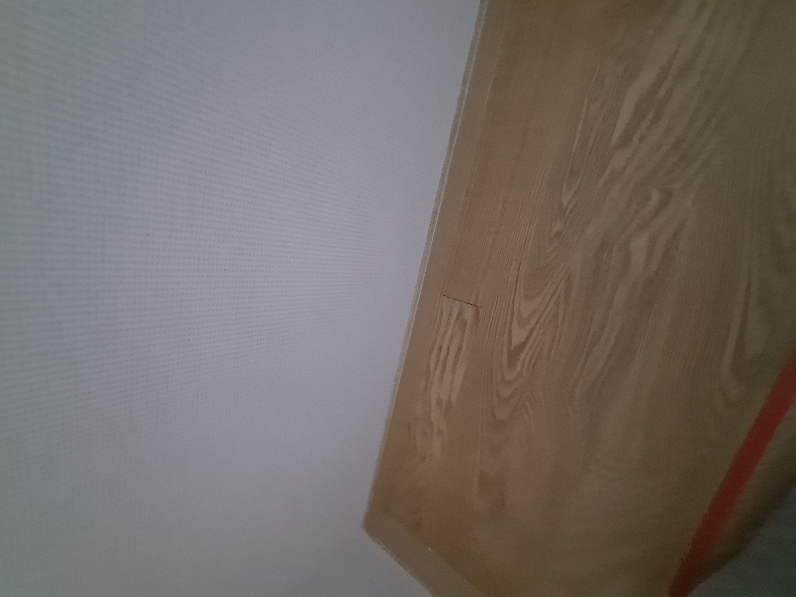

기존 마루를 그대로
동일 자재를 새로 구하지 않고 손상 부위만 복원합니다.
가구를 빼는 과정에서 강마루가 찍히고 긁히며 표면 일부가 벗겨진 현장입니다. 원목마루처럼 나뭇결과 색상 변화가 살아 있는 형태라 단순 메움만으로는 이질감이 생기기 쉬워, 색상과 패턴을 함께 재현해야 하는 까다로운 복원이었습니다.
표면만 덮지 않고 손상된 내부를 먼저 안정적으로 보강했습니다. 이어 기존 마루의 현재 색상에 맞춰 현장에서 조색하고, 주변 나뭇결이 자연스럽게 이어지도록 패턴과 표면 높이를 맞췄습니다.
강마루가 국소적으로 찍히거나 긁혔다고 해서 반드시 마루판 전체를 교체해야 하는 것은 아닙니다. 기존 자재가 단종됐거나 생활 중 변색되어 새 자재와 색이 달라질 수 있다면, 현재 마루를 살리는 부분 복원이 더 자연스러운 선택이 될 수 있습니다.
동일 자재를 새로 구하지 않고 손상 부위만 복원합니다.
철거 범위를 줄여 소음과 먼지, 작업 부담을 낮춥니다.
기성 색 대신 현장에서 기존 마루 색상에 맞춰 조색합니다.
색상뿐 아니라 주변 나뭇결과 패턴의 흐름도 연결합니다.
단순히 찍힌 부분을 채우는 작업이 아닙니다. 내부 보강부터 형태·색상·나뭇결·표면 마감까지 손상 상태에 맞춰 단계별로 진행합니다.
주변 마루와 작업 공간을 보호하고 찍힘, 긁힘, 패임의 깊이와 표면 상태를 확인합니다.
손상 부위를 정리한 뒤 깊이에 맞춰 내부부터 채우고 기존 마루 높이에 맞게 형태를 복원합니다.
사용 기간과 빛에 따라 달라진 현재 강마루 색상을 확인해 현장에서 직접 색을 맞춥니다.
주변 마루의 결 방향과 무늬를 살펴 복원 부위에 자연스럽게 이어지도록 재현합니다.
주변보다 튀어나오거나 들어가지 않도록 높이를 맞추고 색상, 무늬, 광택을 확인해 마무리합니다.
기존 강마루를 철거하지 않고 손상 부위만 복원했습니다. 원목마루처럼 살아 있는 나뭇결과 색상 차이가 자연스럽게 이어지도록 마무리했습니다.

“진짜 감쪽같다! 진짜 대단하시다!”
작업 완료 후 복원된 부분을 확인한 고객님께서 남겨주신 실제 반응입니다.
손상 범위와 마루 상태, 동일 자재 확보 여부에 따라 적합한 방법이 달라집니다. 국소 손상이라면 아래 기준을 먼저 비교해보세요.
| 비교 항목 | 강마루 복원 | 강마루 교체 |
|---|---|---|
| 비용 | 필요한 손상 부위만 복원해 불필요한 교체 비용을 줄일 수 있음 | 자재 구입·철거·재시공이 포함되어 범위에 따라 부담이 커질 수 있음 |
| 작업시간 | 일반적인 부분 손상은 비교적 짧은 시간 안에 작업 가능 | 자재 준비와 철거, 재시공으로 하루 이상 소요될 수 있음 |
| 생활불편 | 부분 작업이라 소음·먼지와 생활 불편이 비교적 적음 | 철거 과정의 소음·먼지와 넓은 작업 공간이 필요할 수 있음 |
| 완성도 | 현재 마루에 현장 조색하고 나뭇결을 이어 이질감을 줄임 | 동일 자재가 없거나 기존 마루가 변색됐다면 색·무늬 차이가 날 수 있음 |
| 효과 | 찍힘·긁힘 등 국소 손상과 퇴거 전 부분 원상복구에 적합 | 들뜸·누수·광범위 파손 등 구조적 손상이 큰 경우에 적합 |
※ 실제 비용과 작업시간은 손상 범위, 마루 종류, 작업 난이도, 동일 자재 확보 여부에 따라 달라질 수 있습니다.
아래 내용을 함께 보내주시면 보다 정확하게 상담할 수 있습니다.